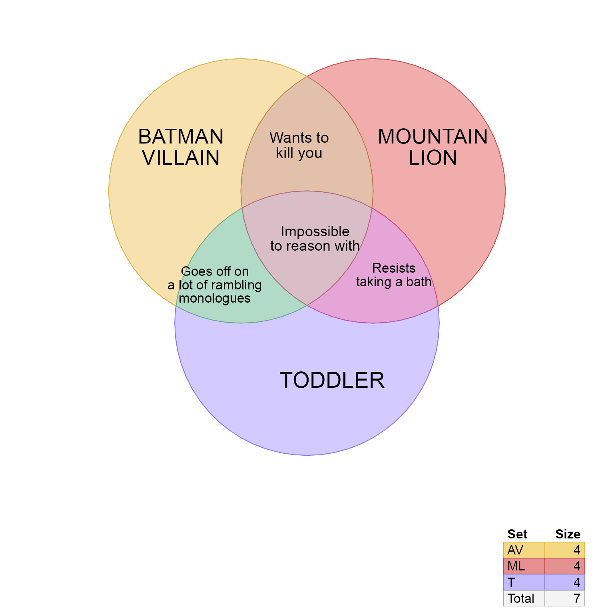
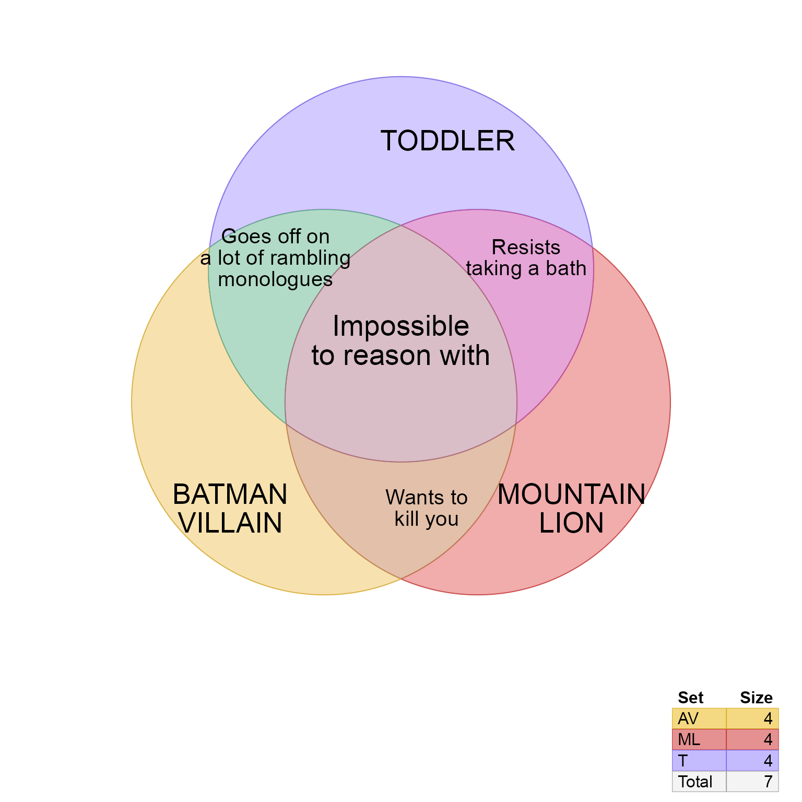

R/venndir-conversion.R
overlaplist2setlist.Rdvenndir conversion from overlap list to setlist
overlaplist2setlist(x, sep = "&", ...)list where the list names are the names of each set,
and values of each list element is a vector of items.
This function takes input in the form of named list
of vectors. The list names represent set overlaps.
The vectors each contain items contained in that
overlap. This content is similar to the input to
counts2setlist() except in that case the input
only contains the number of items per overlap,
and not the items. In this case each overlap contains
the vector of items also.
Other venndir conversion:
counts2setlist(),
im2list(),
im_value2list(),
list2im_opt(),
list2im_value(),
signed_counts2setlist()
# example from eulerr::euler()
av_overlap_list <- list(
AV="BATMAN<br>VILLAIN",
ML="MOUNTAIN<br>LION",
T="TODDLER",
`AV&ML`="Wants to<br>kill you",
`AV&T`="Goes off on<br>a lot of rambling<br>monologues",
`ML&T`="Resists<br>taking a bath",
`AV&ML&T`="Impossible<br>to reason with"
)
setlist <- overlaplist2setlist(av_overlap_list);
# Venn diagram
venndir(setlist,
show_items="item",
label_preset="items",
item_degrees=0,
item_cex=rep(c(2, 1.6, 1.35, 1.5), c(3, 1, 2, 1)),
item_buffer=-0.95)

# Proportional Venn (Euler) diagram
venndir(setlist,
show_items="item",
label_preset="items",
item_degrees=0,
item_buffer=-0.95,
proportional=TRUE)
